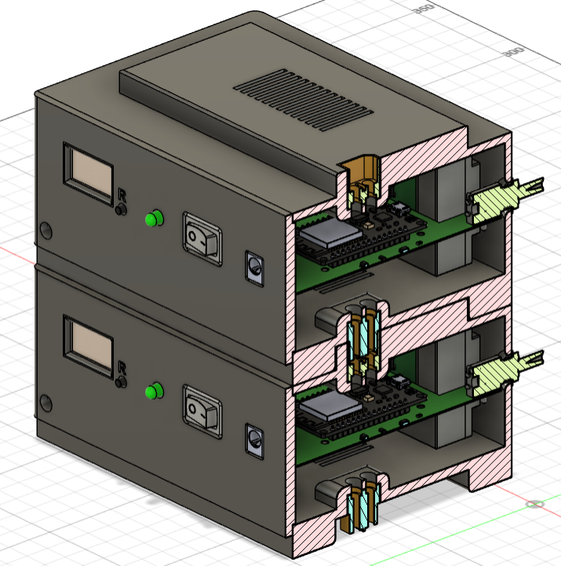
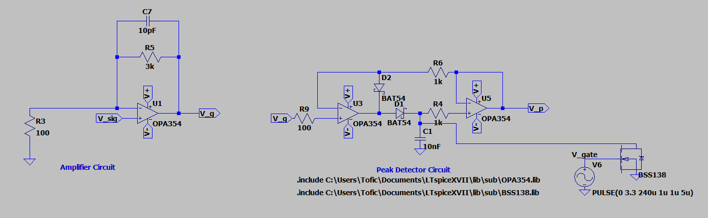
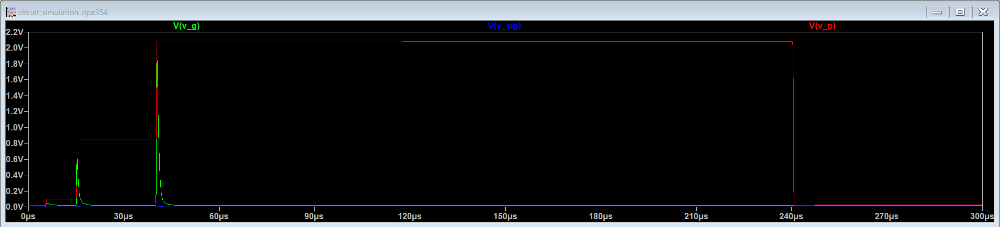
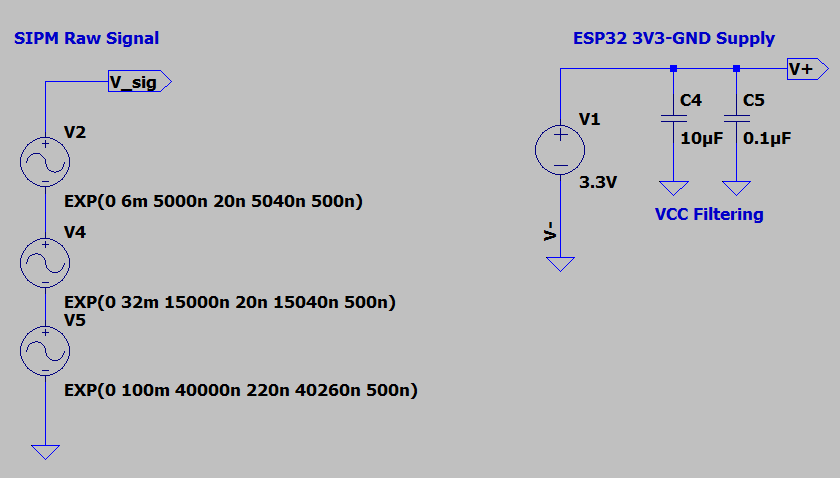
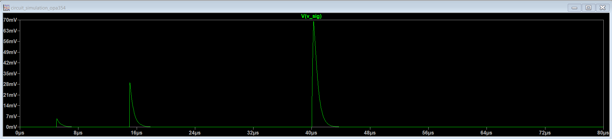
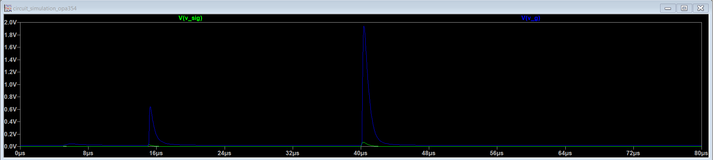
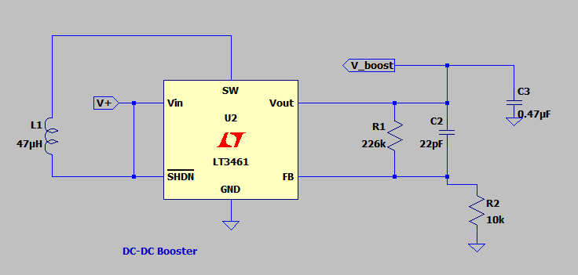
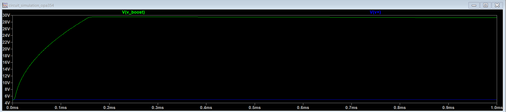
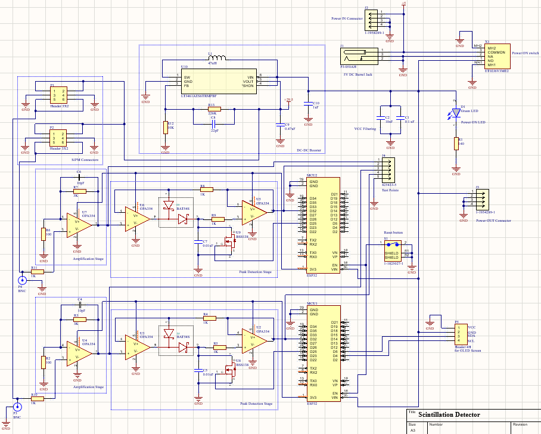
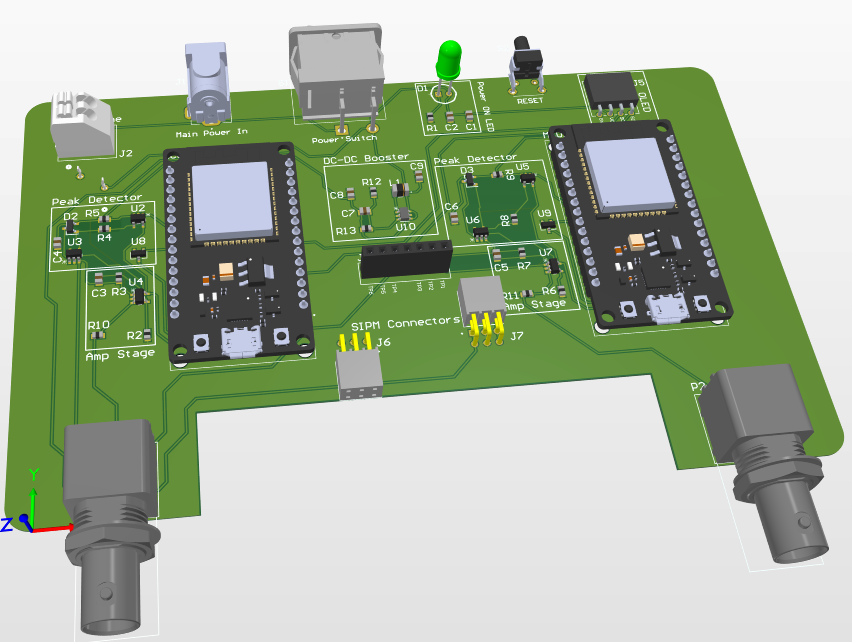

PROJECT AT A GLANCE
At a Glance
01 — PROJECT OVERVIEW
A Modular Detector for PET Synthesis
I developed the electrical hardware for a modular scintillation detector designed to monitor radioactivity during the automated synthesis of positron emission tomography (PET) radiopharmaceuticals.
Each detector module handles two SiPM channels and contains the signal-processing, power, microcontroller, and SiPM interface circuitry required for operation. Two modules were built for the final system, providing four monitored channels.
The modular architecture allows additional detector modules to be connected as required. Modules can be stacked vertically, with power passed between modules so that only the first module requires an external 5 V power connection.

02 — SYSTEM ARCHITECTURE
From Photon Detection to Data
Each module combines two SiPM detector channels with local analog signal processing, power management, and an ESP32-based data acquisition system.
SiPM
Converts scintillation events into electrical pulses
Amplification
30 V/V analog gain
Peak Detection
Captures and holds pulse amplitude
ESP32
ADC acquisition and peak control
The processed signal is acquired by the ESP32 and transmitted through the system's wireless communication interface to a computer-based capture system.
03 — SIGNAL PROCESSING
SiPM Signal Conditioning
SiPM output pulses are short-duration, low-amplitude signals that require amplification before being sampled by the microcontroller.
The amplification stage was designed for a gain of approximately 30 V/V. The amplified signal is then processed by a peak-detection circuit using operational amplifiers, a BSS138 MOSFET, and a Schottky diode.

Peak Detection
When a signal peak is detected, the hold capacitor is charged to the peak voltage. A BSS138 MOSFET provides controlled discharge of the capacitor, allowing the circuit to prepare for subsequent detector events.
The peak was held for approximately 200 µs, with the peak-hold and discharge behavior controlled by the firmware.

04 — CIRCUIT SIMULATION
Simulation Before Prototyping
LTSpice was used to model the signal-processing circuitry before PCB implementation. Representative SiPM pulses were generated using an exponential source to evaluate the response of the circuit across a range of input amplitudes.
Input pulses of approximately 6 mV, 32 mV, and 100 mV were modeled to evaluate the response of the amplification and peak-detection circuitry.


Signal Chain Response
The simulated signal was evaluated through the amplification and peak-detection stages to verify the expected behavior before hardware implementation.

05 — POWER ARCHITECTURE
Stackable Power Distribution
Each module is powered from a regulated 5 V DC external supply. The main power input is distributed to the module circuitry while a DC-DC boost converter generates the approximately 29.5 V bias required by the SiPM.
A module-to-module power interface allows multiple detector modules to be stacked together. The first module connects to the external power supply and passes power to subsequent modules through the interconnect.
Each module also includes its own power switch, allowing individual modules to be enabled or disabled while remaining part of the connected power chain.


5 V Input
External regulated DC supply provides the main module input power.
29.5 V SiPM Bias
DC-DC boost circuitry generates the bias required for SiPM operation.
Power Pass-Through
Modules pass power to adjacent modules through the stackable interconnect.
Independent Switching
Each module can be powered on or off independently within the connected system.
06 — PCB DESIGN
From Schematic to Hardware
I designed the electrical hardware and PCB implementation for the detector module in Altium Designer. The main PCB integrates the signal-processing circuitry, power circuitry, microcontroller, SiPM interface, and hardware debugging interfaces.
The layout was optimized to reduce the overall module size while maintaining accessible test points and interfaces for hardware bring-up and troubleshooting.


Design for Debugging
The main PCB includes dedicated test points and BNC connections that allow the SiPM signal to be probed at different stages of the analog signal-processing chain. Additional interfaces include a power indicator, OLED display, and reset button.
The ESP32 and SiPM interfaces use headers to support component replacement and simplify troubleshooting without requiring a new main PCB.
07 — PCB ASSEMBLY
Manufacturing & Assembly
The PCB was assembled using a combination of stencil-applied solder paste, reflow soldering, hand soldering, and hot-air rework.
Surface-mount components were assembled using the reflow process, while through-hole components and selected interfaces were hand soldered. Hot-air rework was used to correct SiPM soldering issues during assembly and bring-up.
08 — EMBEDDED SYSTEM
Data Acquisition & Control
An ESP32 is used to acquire the processed detector signal through its ADC and control the peak-detection circuitry. Firmware manages the peak-hold and discharge behavior, allowing short-duration SiPM pulses to be captured in a form suitable for digital acquisition.
The detector system also includes a wireless communication interface that allows measurement data to be transmitted to the computer-based capture system.
ADC Acquisition
Samples the peak-detected signal using the ESP32 ADC.
Peak Control
Firmware controls the peak-hold and capacitor discharge behavior.
Wireless Interface
Provides communication between the detector system and the computer-based capture system.
Modular Expansion
Additional detector modules can be connected to increase the number of monitored channels.
09 — TESTING & VALIDATION
Hardware Bring-Up & Validation
Each portion of the hardware was tested individually during bring-up to validate PCB assembly, power distribution, and signal-processing functionality before system integration.
Continuity Testing
Used a multimeter to verify sensitive nodes, solder connections, signal paths, and the absence of shorts between power and ground.
SiPM Assembly
Verified SiPM connections and pin isolation using resistance measurements. An incorrectly oriented SiPM was identified and corrected through rework.
Power Validation
Measured the main power rail, shared module power lines, and component supply inputs to verify the expected voltage levels.
Signal-Chain Testing
Used a signal generator and oscilloscope to validate amplifier gain, noise sensitivity, and peak-detector response.
Amplifier & Peak Detection Testing
A known signal was injected using a signal generator while the amplifier and peak-detection outputs were monitored through dedicated PCB test points using an oscilloscope.
The amplifier response was evaluated for gain and noise sensitivity. The peak detector was evaluated by observing the detected peak, hold period, signal fall time, and output response.

10 — ENGINEERING TAKEAWAYS
Design Tradeoffs & Future Improvements
The project provided experience integrating analog signal processing, SiPM bias generation, embedded acquisition, PCB design, assembly, and system-level modularity into a complete detector platform.
The prototype also highlighted areas for improvement in a future revision. Additional analog filtering could be introduced to improve noise rejection and signal conditioning.
The grounding and power-distribution architecture could also be refined further. The prototype used a common ground architecture, providing an opportunity for a future revision to further separate sensitive analog circuitry from digital and power-related noise sources.
The modular architecture, replaceable interfaces, and accessible test points were designed to simplify troubleshooting and future expansion of the detector.
11 — TECHNICAL HIGHLIGHTS